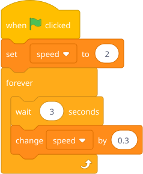
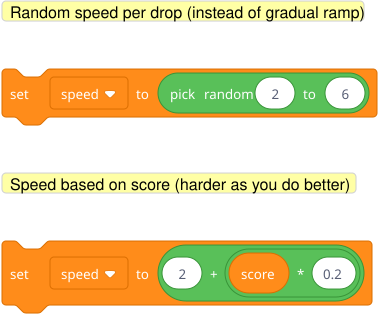
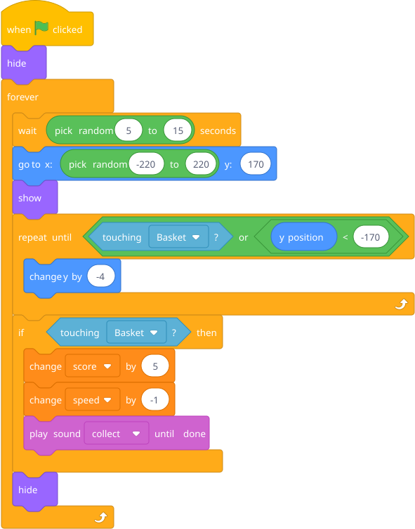

Revisit the catch game: "How do we make it get harder?" Introduce the idea that variables can control game behavior.
Add this as a separate script on the falling object sprite:

Now the game gets progressively faster. Every 3 seconds, the fall speed ticks up. He doesn't need to change anything else — the falling script already uses (speed), so it automatically gets harder.
Key insight: Variables aren't just for score. They control how the game behaves. Speed, gravity, spawn rate — these are all just numbers you can change. This is a powerful idea.

Add a "power-up" object (a different sprite or costume) that slows things down or gives bonus points.
Hint — blocks he'll need:
A second falling sprite (duplicate the first one, change the costume):

The power-up appears less often (wait (pick random (5) to (15)) seconds), is worth more points, and reduces the speed variable — making everything temporarily easier. This requires another conditional inside the game loop concept and reinforces that variables are levers that control the whole game.